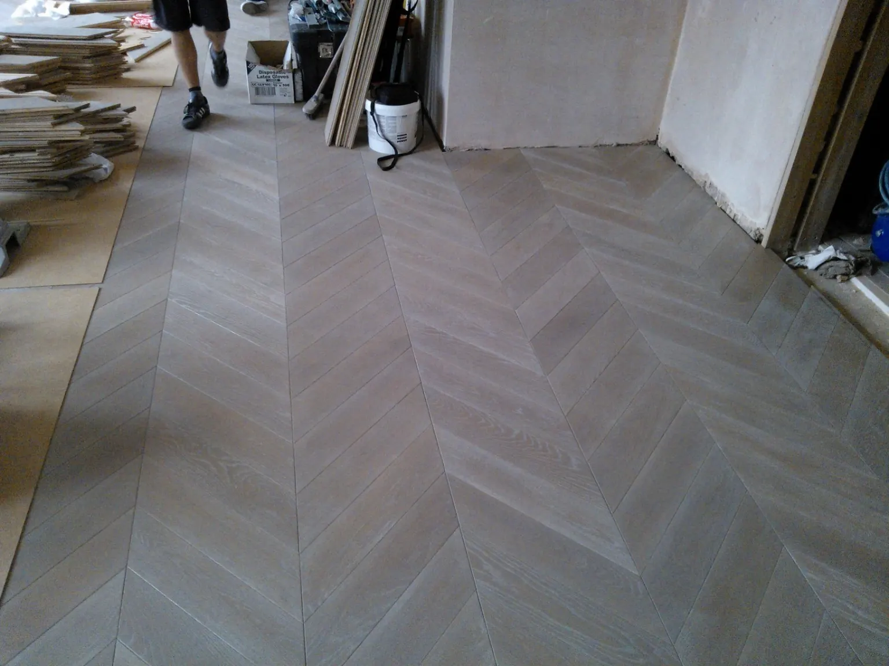
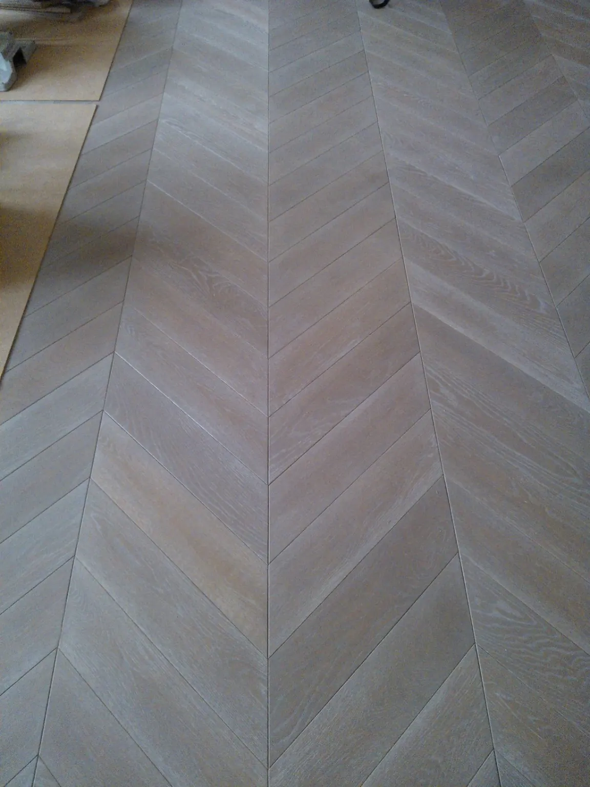
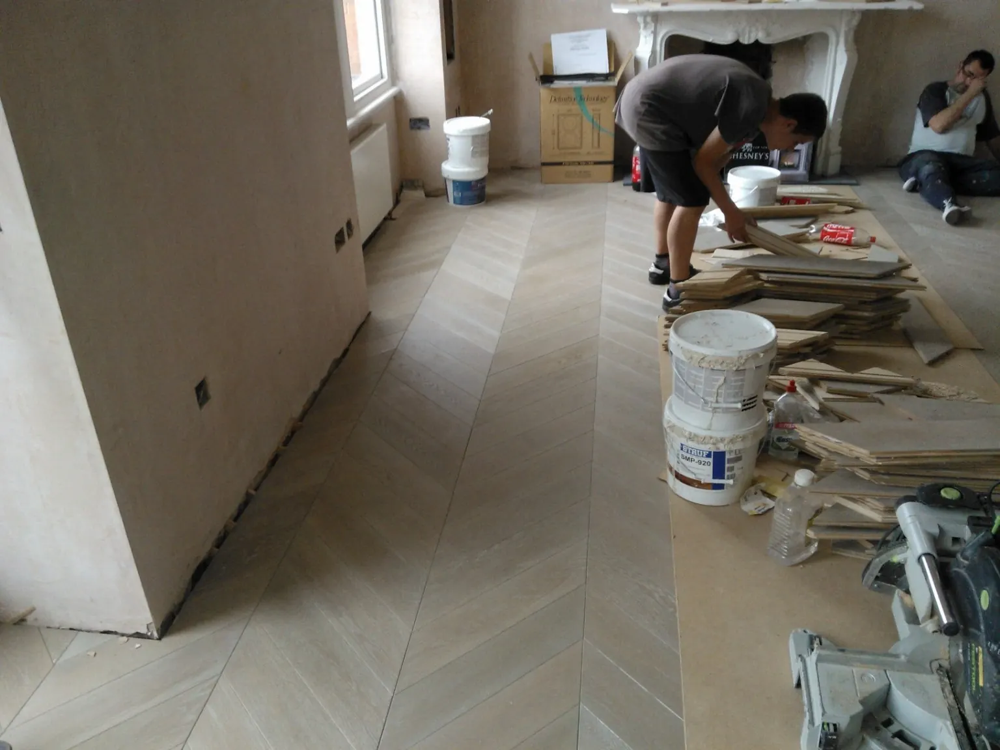
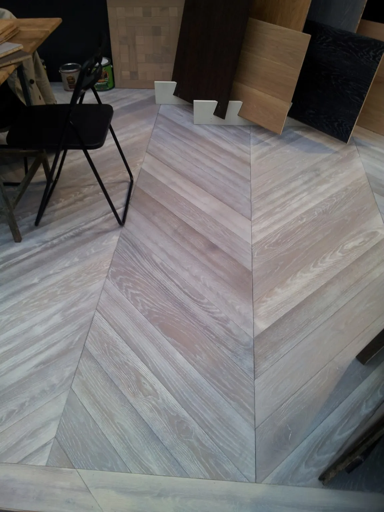
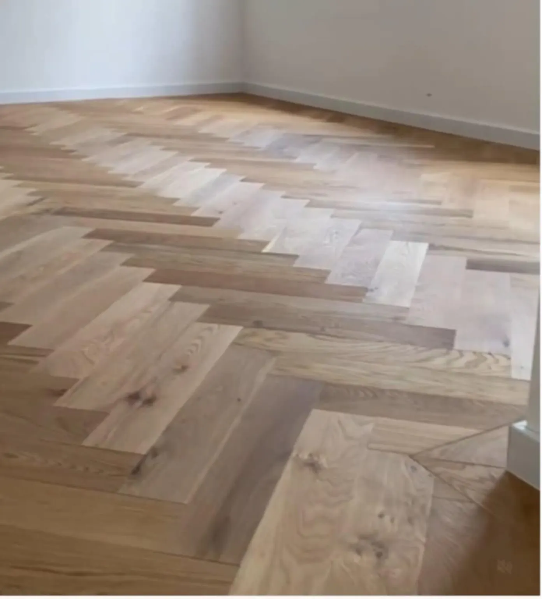

Méret
Alapméret: 120×600 és 120×1200 mm.
Egyedi méretben is rendelhető.
Karakteres geometrikus parketta valódi fából, közvetlenül a gyártótól. Alapméretben vagy az adott térhez igazított egyedi méretben is készítjük.
Nettó induló ár, felületkezelés nélkül.
Alapméret: 120×600 és 120×1200 mm.
Egyedi méretben is rendelhető.
Alapként tölgy és kőris. Különleges, kereskedelmi forgalomban beszerezhető és műszakilag megfelelő fafajból is tudunk fedőlamellát gyártani.
A rétegelt parketta padlófűtéshez is alkalmas. A 2 és 3 rétegű parketta egyaránt használható padlófűtéshez.
Olajozás · Lakkozás · Strukturált kefélés · Kézi gyalulás
A parketta készre, felületkezelve is rendelhető. Helyszíni felületkezelésnél a végleges szín és felület a helyiség fényviszonyaihoz és környezetéhez igazítható.
A pontos gyártási idő a választott kiviteltől, fafajtól, mérettől és mennyiségtől függ.
Kiválasztás → Egyeztetés → Ajánlat → Gyártás → Átvétel





Az alapméret 120×600 és 120×1200 mm, de egyedi méretben is rendelhető.
Igen. A 2 és 3 rétegű parketta egyaránt alkalmas padlófűtéshez.
Alapként tölgy és kőris, de különleges, kereskedelmi forgalomban beszerezhető és műszakilag megfelelő fafajból is tudunk fedőlamellát gyártani.
Jellemzően 30–60 nap, a választott kiviteltől és mennyiségtől függően.
A Chevron induló ára 18 000 Ft + ÁFA/m², felületkezelés nélkül. A végleges ár a kivitel, méret, fafaj, felület és mennyiség alapján készül.
Nem kell minden részletet előre tudnia.
Írja meg a hozzávetőleges mennyiséget és az elképzelést, a műszaki részleteket egyeztetjük.
A Quadrum Parketta a Signum Parkett Kft. saját parkettamárkája és közvetlen gyártói értékesítési oldala. Három évtizede gyártunk rétegelt parkettát.
További információ a gyártóról